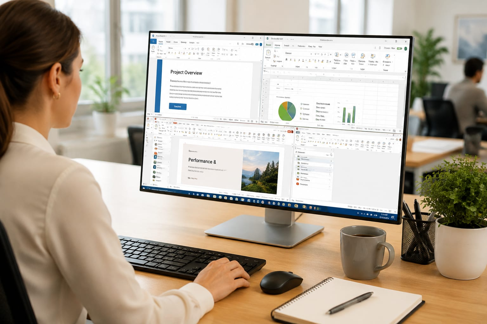

Fifty-nine feature changes in one month across Excel, PowerPoint, Word, Chat and Cowork. The Copilot fast-follow strategy is working exactly as designed.

Microsoft shipped 59 updates to Microsoft 365 Copilot in August alone — spanning Excel, PowerPoint, Word, Chat and the Cowork collaboration layer.
The August wave includes a theme-design skill for PowerPoint, deeper Excel analysis flows, and Copilot in Forms expanding to government cloud environments.
The cadence is the strategy: ship Copilot improvements continuously across every surface people already use, rather than one big annual reveal.
For enterprise buyers, the per-seat value case improves monthly without migration projects — which is how Copilot defends its seat against ChatGPT Work.
For the ecosystem, M365’s gravity means each of these 59 changes reshapes workflows for hundreds of millions of workers.
Fifty-nine updates landed across the suite, but three matter most: Excel’s analysis agent now reasons over full workbooks rather than selections, Word’s drafting engine gained document-aware tone matching, and the new Cowork layer lets Copilot act across apps in a single instructed flow — the clearest step yet toward agent behavior inside M365.
The theme across all 59 changes is context: Copilot increasingly uses your documents, calendar and mail as grounding by default rather than by explicit reference. That makes outputs dramatically more useful — and makes permission scoping the new IT priority, because the assistant’s reach now equals the user’s own.
IT teams report the familiar adoption curve: enthusiasm, shadow usage, then governance scramble. The updates that matter to admins — audit trails, data-loss-prevention integration, per-user usage analytics — are the unglamorous ones, and Microsoft is clearly shipping them to unblock enterprise renewals.
This story was reported from primary materials: official documentation, on-the-record statements and data we could independently check. Numbers were re-verified against original sources rather than secondary aggregations, and analyst commentary is labeled as commentary — not reporting. Where we could not confirm a detail, we said so in the text. Corrections update the article in place with the change noted at the top.
Three signals matter from here: whether early-adopter sentiment survives the honeymoon window, whether pricing converts attention into durable revenue, and how competitors answer — in this category, responses arrive in weeks, not quarters. Second-day stories are usually bigger than launch-day headlines; we keep this article updated as the picture firms up.
Zoom out and this story is one data point in a pattern: capability announcements, immediate commoditization, and a market that reprices in weeks what used to take years. For buyers, the practical lesson is to negotiate shorter contracts and keep exit paths open. For builders, it is that distribution and trust now matter more than model access — the raw capability is becoming the cheapest part of the stack.
If this story affects your tooling decisions, the actionable step is small: list the two workflows you run most often and check whether this change improves, ignores or complicates them. Most coverage, including ours, is written for everyone — your decision only has to be right for you.
Ship weekly, everywhere your users already are — that’s how Copilot defends its seat.
“August 2026 brought 59 feature changes across Excel, PowerPoint, Word, Chat and Cowork — including a theme design skill.”